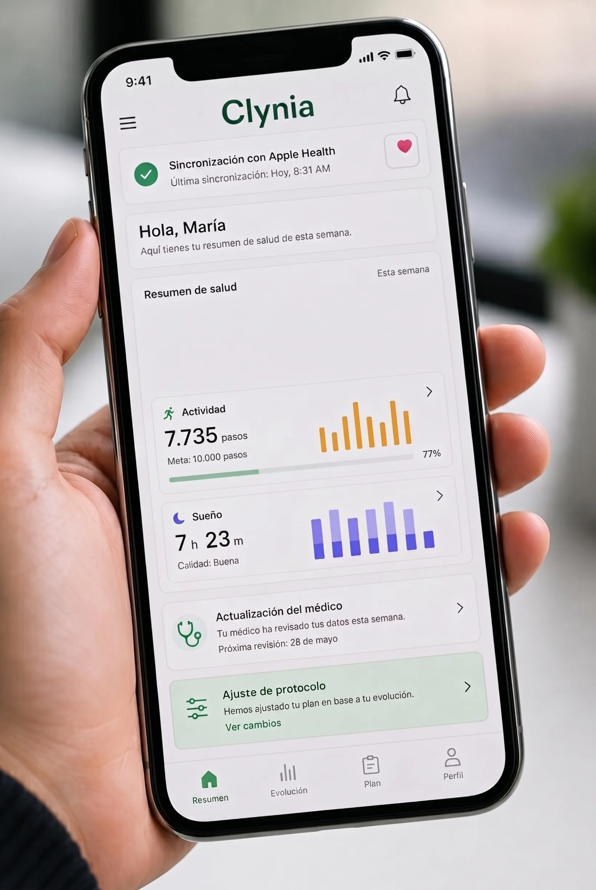

Valoración médica
99€
- Valoración por médico colegiado
- Receta electrónica si procede
Una valoración puntual con un médico. No incluye seguimiento.
Empieza gratis Ver planes
Ver planes
Te conectamos con médicos colegiados que valoran tu caso y, si es adecuado para ti, indican un tratamiento médico inyectable con seguimiento. Todo online, desde casa.
Cuestionario clínico gratuito. No pagas nada hasta elegir plan.
El tratamiento médico inyectable sólo lo indica tu médico si lo considera adecuado tras valorarte, con receta y seguimiento.
Un servicio médico de verdad, cómodo y privado
Tu cuerpo regula el apetito y el metabolismo con una biología que no elegiste. Por eso el acompañamiento de un médico lo cambia todo. No se trata de esforzarte más, sino de hacerlo bien y con quien sabe.
Empieza gratisSin cita ni salas de espera. Empiezas gratis y un médico te llama cuando ha valorado tu caso, nunca un algoritmo.
Responde el cuestionario clínico gratuito en unos minutos, desde el móvil. Si no es para ti, te lo decimos al momento y te orientamos.
Si eres apto, eliges el plan que prefieras: valoración, 4 o 12 meses. No pagas nada hasta aquí.
Un médico colegiado toma tu caso y te llama. Si considera que el tratamiento no es adecuado para ti, te devolvemos el importe. Si procede, recibes tu receta en farmacia autorizada y, con los planes de seguimiento, el acompañamiento de tu médico.
Un médico te llamará cuando haya valorado tu caso. Si no consigue localizarte, lo intentará de nuevo o te escribirá por email o por tu portal. Mantente atento al teléfono.
Cuando empiezas con Clynia no compras un producto: cuentas con un equipo médico que cuida cada paso.
Cuando está indicado, el tratamiento puede incluir medicación inyectable que tu médico valora según tu caso. Sólo se prescribe con receta y siempre como complemento a una alimentación equilibrada y actividad física.

El tratamiento médico puede incluir medicación inyectable u oral. Sólo la indica un médico colegiado si es apropiada para ti, y se dispensa con receta en una farmacia autorizada.
Empieza con tu cuestionario gratuito. No pagas nada hasta elegir un plan, que eliges al terminar el cuestionario. Todos incluyen la valoración de un médico colegiado.
99€
Una valoración puntual con un médico. No incluye seguimiento.
Empieza gratis299€
El equilibrio entre acompañamiento y compromiso.
Empieza gratis890€
El cuidado más completo, a tu ritmo.
Empieza gratisEl cuestionario es gratis y no pagas hasta elegir un plan. Si tras tu valoración el médico considera que el tratamiento no es adecuado para ti, te devolvemos el importe. El coste del medicamento, si se prescribe, se abona aparte en la farmacia.
Profesionales colegiados en España, independientes y especializados en el abordaje médico del peso. Cada decisión la toma un médico, nunca un algoritmo.
Los médicos no recetan a todo el mundo. Valoran cada caso con rigor clínico, y eso es justo lo que necesitas.
Sin promesas mágicas. Un proceso médico, ordenado y a tu ritmo.
Tu valoración con un médico colegiado y, si procede, el inicio del tratamiento.
Con un plan de seguimiento, tu médico ajusta la pauta a tu ritmo y resuelve tus dudas.
Con los planes de 4 o 12 meses, tu médico te acompaña de forma continua para consolidar lo conseguido.
El seguimiento continuo está incluido en los planes de 4 y 12 meses. La valoración médica es puntual y no incluye seguimiento. Cada cuerpo es distinto, y el seguimiento del médico es lo que marca la diferencia.
Nuestro servicio es para adultos que quieren perder peso con acompañamiento médico. No es para todo el mundo, y eso es justo lo que lo hace serio.
No. En Clynia no hay citas ni salas de espera. Rellenas tu cuestionario y un médico te llama cuando ha valorado tu caso. Si no consigue localizarte, lo intentará de nuevo o te escribirá por email o por tu portal.
Empezar es gratis: el cuestionario online no tiene coste y no pagas nada hasta elegir un plan. Si tras tu valoración el médico considera que el tratamiento no es adecuado para ti, te devolvemos el importe.
Sí. La telemedicina es un acto médico reconocido en España y un médico colegiado puede emitir una receta electrónica privada válida en cualquier farmacia autorizada del país.
Te receta un médico colegiado e independiente, y sólo si es clínicamente apropiado tras tu valoración. Clynia nunca receta: la decisión es siempre del médico, que no prescribe a todo el mundo.
La valoración suele considerarse a partir de un IMC de 30, o de 27 con alguna condición asociada, pero la decisión final siempre es del médico.
Pueden aparecer molestias digestivas leves y pasajeras, como náuseas o sensación de plenitud, que suelen mejorar a medida que el cuerpo se adapta. Tu médico ajusta la pauta o la suspende si es necesario.
El sobrepeso es una condición crónica y el cuerpo tiende a recuperar peso. Por eso lo importante es el acompañamiento del médico y los cambios de hábito. Si procede dejar el tratamiento, se hace de forma gradual y supervisada.
Tus datos de salud se tratan conforme al RGPD, cifrados y visibles únicamente para el médico que te atiende. Nunca los compartimos con terceros con fines comerciales.
En la farmacia autorizada que prefieras. La receta electrónica es válida en cualquier farmacia del territorio nacional.
Si el cuestionario detecta que no es para ti, te lo decimos al momento y no pagas nada. Y si ya has elegido un plan pero el médico considera que el tratamiento no es adecuado, te devolvemos el importe.
Cuestionario gratuito, sin compromiso y sin tarjeta. No pagas nada hasta decidir, y siempre hay un médico colegiado al otro lado.
Empieza gratis